File: 000030.gt.txt (if the image is defective, simply delete all Arabic text and the line will be excluded)
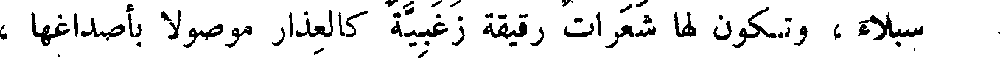
سبلاء، وتكون لها شعرات رقيقة زغبية كالعذار موصولا بأصداغها ،
File: 000031.gt.txt (if the image is defective, simply delete all Arabic text and the line will be excluded)
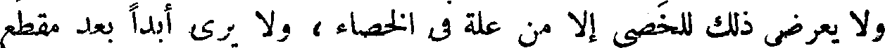
ولا يعرض ذلك للخصي إلا من علة في الخصاء ، ولا يرى أبدا بعد مقطع
File: 000032.gt.txt (if the image is defective, simply delete all Arabic text and the line will be excluded)
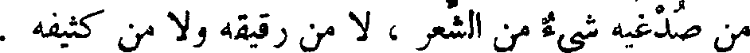
من صدغيه شيء من الشعر ، لا من رقيقه ولا من كثيفه .
File: 000033.gt.txt (if the image is defective, simply delete all Arabic text and the line will be excluded)
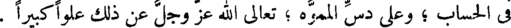
في الحساب ؛ وعلى دس المموه ؛ تعالى الله عز وجل عن ذلك علوا كبيرا .
File: 000034.gt.txt (if the image is defective, simply delete all Arabic text and the line will be excluded)
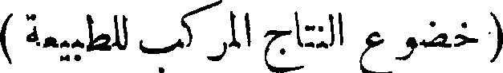
( خضوع النتاج المركب للطبيعة )
File: 000035.gt.txt (if the image is defective, simply delete all Arabic text and the line will be excluded)
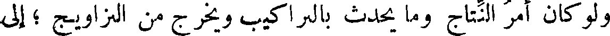
ولو كان أمر النتاج وما يحدث بالتراكيب ويخرج من التزاويج ؛ إلى
File: 000036.gt.txt (if the image is defective, simply delete all Arabic text and the line will be excluded)
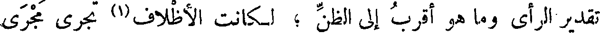
تقدير الرأي وما هو أقرب إلى الظن ؛ لكانت الأظلاف(1) تجري مجرى
File: 000037.gt.txt (if the image is defective, simply delete all Arabic text and the line will be excluded)
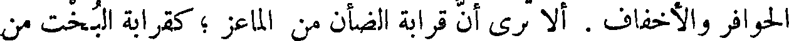
الحوافر والأخفاف . ألا ترى أن قرابة الضأن من الماعز ؛ كقرابة البخت من
File: 000038.gt.txt (if the image is defective, simply delete all Arabic text and the line will be excluded)
العراب ؛ والحيل من الحمير ! !
File: 000039.gt.txt (if the image is defective, simply delete all Arabic text and the line will be excluded)
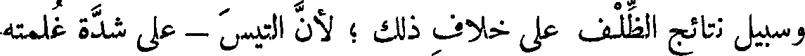
وسبيل نتائج الظلف على خلاف ذلك ؛ لأن التيس - على شدة غلمته
File: 000040.gt.txt (if the image is defective, simply delete all Arabic text and the line will be excluded)
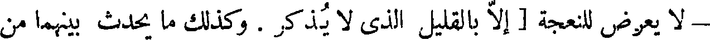
- لا يعرض للنعجة [ إلا بالقليل الذي لا يذكر . وكذلك ما يحدث بينهما من
File: 000041.gt.txt (if the image is defective, simply delete all Arabic text and the line will be excluded)
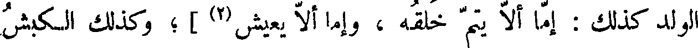
الولد كذلك : إما ألا يتم خلقه ، وإما ألا يعيش (2) ] ؛ وكذلك الكبش
File: 000042.gt.txt (if the image is defective, simply delete all Arabic text and the line will be excluded)
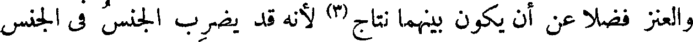
والعنز فضلا عن أن يكون بينهما نتاج (3) لأنه قد يضرب الجنس في الجنس
File: 000043.gt.txt (if the image is defective, simply delete all Arabic text and the line will be excluded)
الذي لا يلقحه ؛ ولا يكون اللقاح إلا بعد ضراب .
File: 000044.gt.txt (if the image is defective, simply delete all Arabic text and the line will be excluded)
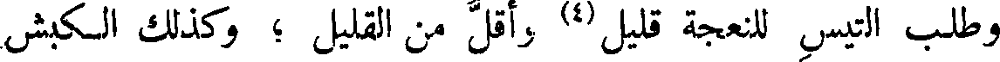
وطلب التيس للنعجة قليل (4) وأقل من القليل ؛ وكذلك الكبش
File: 000045.gt.txt (if the image is defective, simply delete all Arabic text and the line will be excluded)
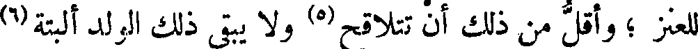
للعنز ؛ وأقل من ذلك أن تتلاقح (5) ولا يبقى ذلك الولد البتة (6)
File: 000046.gt.txt (if the image is defective, simply delete all Arabic text and the line will be excluded)
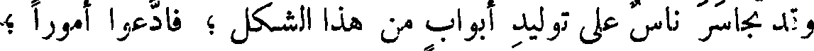
وقد تجاسر ناس على توليد أبواب من هذا الشكل ؛ فادعوا أمورا ؛
File: 000047.gt.txt (if the image is defective, simply delete all Arabic text and the line will be excluded)
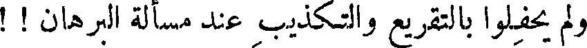
ولم يحفلوا بالتقريع والتكذيب عند مسألة البرهان ! !
File: 000048.gt.txt (if the image is defective, simply delete all Arabic text and the line will be excluded)
( زعم في الزرافة )
File: 000049.gt.txt (if the image is defective, simply delete all Arabic text and the line will be excluded)
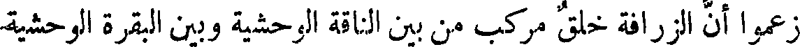
زعموا أن الزرافة خلق مركب من بين الناقة الوحشية وبين البقرة الوحشية
File: 000050.gt.txt (if the image is defective, simply delete all Arabic text and the line will be excluded)
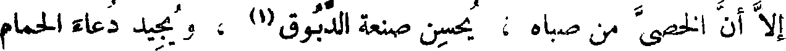
إلا أن الخصي من صباه ؛ يحسن صنعة الدبوق (1) ، ويجيد دعاء الحمام
File: 000051.gt.txt (if the image is defective, simply delete all Arabic text and the line will be excluded)
الطوري (2) ، وما شئت من صغار الصناعات .
File: 000052.gt.txt (if the image is defective, simply delete all Arabic text and the line will be excluded)
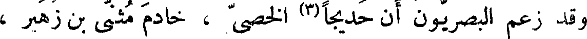
وقد زعم البصريون أن حديجا(3) الخصي ، خادم المثنى بن زهير ،
File: 000053.gt.txt (if the image is defective, simply delete all Arabic text and the line will be excluded)
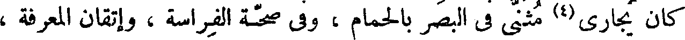
كان يجاري(4) مثنى في البصر بالحمام ، وفي صحة الفراسة ، وإتقان المعرفة ،
File: 000054.gt.txt (if the image is defective, simply delete all Arabic text and the line will be excluded)
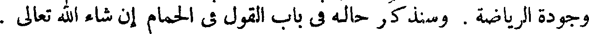
وجودة الرياضة . وسنذكر حاله في باب القول في الحمام إن شاء الله تعالى .
File: 000055.gt.txt (if the image is defective, simply delete all Arabic text and the line will be excluded)
54 هذا قولهم فيمن خصي من الصقالبة . وملوكنا لعقول خصيان
File: 000056.gt.txt (if the image is defective, simply delete all Arabic text and the line will be excluded)
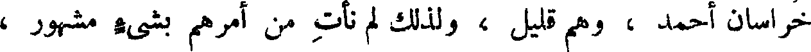
خراسان أحمد ، وهم قليل ، ولذلك لم نأت من أمرهم بشيء مشهور ،
File: 000057.gt.txt (if the image is defective, simply delete all Arabic text and the line will be excluded)
( خصيان السند )
File: 000058.gt.txt (if the image is defective, simply delete all Arabic text and the line will be excluded)
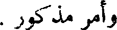
وأمر مذكور .
File: 000059.gt.txt (if the image is defective, simply delete all Arabic text and the line will be excluded)
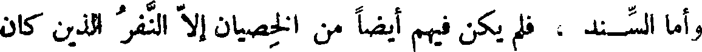
وأما السند ، فلم يكن فيهم أيضا من الخصيان إلا النفر الذين كان
To Save: `Ctrl+s`, make sure to choose `Webpage, complete`!